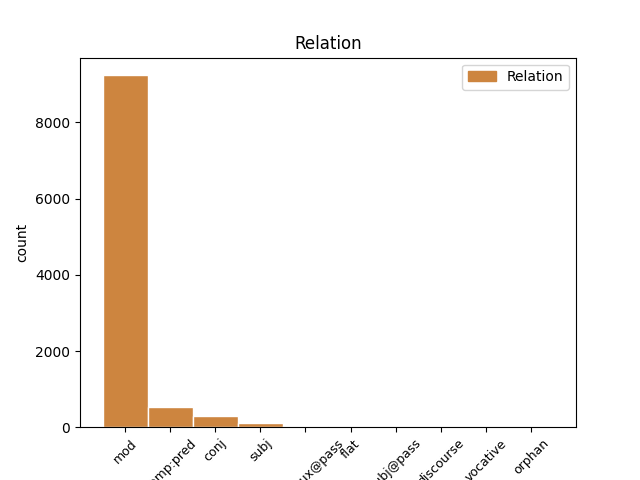
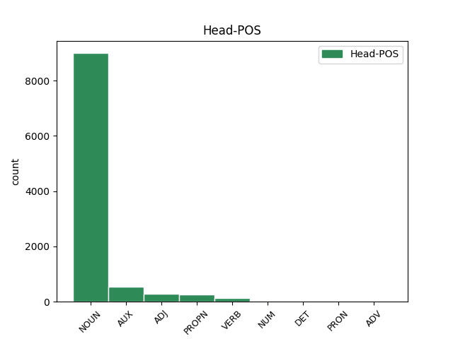
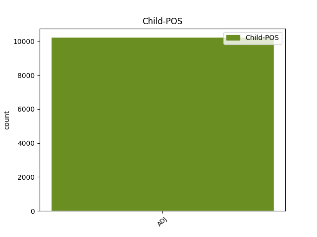

Distribution of features within this leaf



Agreement Rules sorted by frequency.
- When the dependent token is the modifer(mod) of the head token, and the dependent token is ADJ.
1 Подобна подобен ADJ Afsi Definite=Ind|Degree=Pos|Gender=Fem|Number=Sing 2 mod _ _
2 диспропорция диспропорция NOUN Ncfsi Definite=Ind|Gender=Fem|Number=Sing 0 _ _ _
3 говори _ _ _ _ 0 _ _ _
4 за _ _ _ _ 0 _ _ _
5 липсата _ _ _ _ 0 _ _ _
6 на _ _ _ _ 0 _ _ _
7 интерес _ _ _ _ 0 _ _ _
8 у _ _ _ _ 0 _ _ _
9 държавите _ _ _ _ 0 _ _ _
10 от _ _ _ _ 0 _ _ _
11 ЕС _ _ _ _ 0 _ _ _
12 . _ _ _ _ 0 _ _ _
1 Подобни _ _ _ _ 0 _ _ _
2 изчисления _ _ _ _ 0 _ _ _
3 дори _ _ _ _ 0 _ _ _
4 са съм AUX Vxitf-r3p Aspect=Imp|Mood=Ind|Number=Plur|Person=3|Tense=Pres|VerbForm=Fin|Voice=Act 0 _ _ _
5 нежелани нежелан ADJ A-pi Definite=Ind|Degree=Pos|Number=Plur 4 comp:pred _ SpaceAfter=No
6 . _ _ _ _ 0 _ _ _
1 Такава _ _ _ _ 0 _ _ _
2 позиция _ _ _ _ 0 _ _ _
3 на _ _ _ _ 0 _ _ _
4 управляващите _ _ _ _ 0 _ _ _
5 би _ _ _ _ 0 _ _ _
6 могла _ _ _ _ 0 _ _ _
7 да _ _ _ _ 0 _ _ _
8 породи _ _ _ _ 0 _ _ _
9 в _ _ _ _ 0 _ _ _
10 нашите _ _ _ _ 0 _ _ _
11 европейски _ _ _ _ 0 _ _ _
12 партньори _ _ _ _ 0 _ _ _
13 съмнение _ _ _ _ 0 _ _ _
14 и _ _ _ _ 0 _ _ _
15 недоверие _ _ _ _ 0 _ _ _
16 по _ _ _ _ 0 _ _ _
17 отношение _ _ _ _ 0 _ _ _
18 на _ _ _ _ 0 _ _ _
19 българската _ _ _ _ 0 _ _ _
20 евроинтеграционна евроинтеграционен ADJ Afsi Definite=Ind|Degree=Pos|Gender=Fem|Number=Sing 0 _ _ _
21 и _ _ _ _ 0 _ _ _
22 регионална регионален ADJ Afsi Definite=Ind|Degree=Pos|Gender=Fem|Number=Sing 20 conj _ _
23 политика _ _ _ _ 0 _ _ _
24 , _ _ _ _ 0 _ _ _
25 предупреждават _ _ _ _ 0 _ _ _
26 от _ _ _ _ 0 _ _ _
27 БЕЛ _ _ _ _ 0 _ _ _
28 . _ _ _ _ 0 _ _ _
1 Сините син ADJ A-pd Definite=Def|Degree=Pos|Number=Plur 2 subj _ _
2 назначават назначавам VERB Vpitf-r3p Aspect=Imp|Mood=Ind|Number=Plur|Person=3|Tense=Pres|VerbForm=Fin|Voice=Act 0 _ _ _
3 служебно _ _ _ _ 0 _ _ _
4 областен _ _ _ _ 0 _ _ _
5 лидер _ _ _ _ 0 _ _ _
1 Кандидатурата _ _ _ _ 0 _ _ _
2 била съм VERB Vxitcat-sfi Aspect=Imp|Definite=Ind|Gender=Fem|Mood=Ind|Number=Sing|VerbForm=Part|Voice=Act 0 _ _ _
3 единодушно _ _ _ _ 0 _ _ _
4 подкрепена подкрепя ADJ Vpptcv--sfi Aspect=Perf|Definite=Ind|Degree=Pos|Gender=Fem|Number=Sing|VerbForm=Part|Voice=Pass 2 comp:aux@pass _ SpaceAfter=No
5 , _ _ _ _ 0 _ _ _
6 съобщиха _ _ _ _ 0 _ _ _
7 отлично _ _ _ _ 0 _ _ _
8 информирани _ _ _ _ 0 _ _ _
9 източници _ _ _ _ 0 _ _ _
10 . _ _ _ _ 0 _ _ _
1 В _ _ _ _ 0 _ _ _
2 призовата _ _ _ _ 0 _ _ _
3 шестица _ _ _ _ 0 _ _ _
4 влизат _ _ _ _ 0 _ _ _
5 и _ _ _ _ 0 _ _ _
6 цар _ _ _ _ 0 _ _ _
7 Борис _ _ _ _ 0 _ _ _
8 III _ _ _ _ 0 _ _ _
9 ( _ _ _ _ 0 _ _ _
10 11.9 _ _ _ _ 0 _ _ _
11 % _ _ _ _ 0 _ _ _
12 ) _ _ _ _ 0 _ _ _
13 , _ _ _ _ 0 _ _ _
14 Христо _ _ _ _ 0 _ _ _
15 Стоичков _ _ _ _ 0 _ _ _
16 ( _ _ _ _ 0 _ _ _
17 11.5 _ _ _ _ 0 _ _ _
18 % _ _ _ _ 0 _ _ _
19 ) _ _ _ _ 0 _ _ _
20 , _ _ _ _ 0 _ _ _
21 цар _ _ _ _ 0 _ _ _
22 Симеон симеон PROPN Npmsi Definite=Ind|Gender=Masc|Number=Sing 0 _ _ _
23 II втори ADJ Momsi Definite=Ind|Degree=Pos|Gender=Masc|Number=Sing|NumType=Ord 22 flat _ _
24 ( _ _ _ _ 0 _ _ _
25 8.1 _ _ _ _ 0 _ _ _
26 % _ _ _ _ 0 _ _ _
27 ) _ _ _ _ 0 _ _ _
28 . _ _ _ _ 0 _ _ _
1 Въпреки _ _ _ _ 0 _ _ _
2 признанието _ _ _ _ 0 _ _ _
3 на _ _ _ _ 0 _ _ _
4 Виденов _ _ _ _ 0 _ _ _
5 , _ _ _ _ 0 _ _ _
6 че _ _ _ _ 0 _ _ _
7 хлебната _ _ _ _ 0 _ _ _
8 криза _ _ _ _ 0 _ _ _
9 е _ _ _ _ 0 _ _ _
10 резултат _ _ _ _ 0 _ _ _
11 от _ _ _ _ 0 _ _ _
12 сгрешен _ _ _ _ 0 _ _ _
13 зърнен _ _ _ _ 0 _ _ _
14 баланс _ _ _ _ 0 _ _ _
15 , _ _ _ _ 0 _ _ _
16 виновни виновен ADJ A-pi Definite=Ind|Degree=Pos|Number=Plur 19 subj@pass _ _
17 не _ _ _ _ 0 _ _ _
18 се _ _ _ _ 0 _ _ _
19 намериха намеря-(се) VERB Vpptf-o3p Aspect=Perf|Mood=Ind|Number=Plur|Person=3|Tense=Past|VerbForm=Fin|Voice=Act 0 _ _ _
20 . _ _ _ _ 0 _ _ _
1 Васко васко PROPN Npmsi Definite=Ind|Gender=Masc|Number=Sing 0 _ _ _
2 Абаджиев _ _ _ _ 0 _ _ _
3 / _ _ _ _ 0 _ _ _
4 1926 1926 ADJ Mofsi Definite=Ind|Degree=Pos|Gender=Fem|Number=Sing|NumType=Ord 1 discourse _ _
5 - _ _ _ _ 0 _ _ _
6 1974 _ _ _ _ 0 _ _ _
7 / _ _ _ _ 0 _ _ _
8 е _ _ _ _ 0 _ _ _
9 син _ _ _ _ 0 _ _ _
10 на _ _ _ _ 0 _ _ _
11 известния _ _ _ _ 0 _ _ _
12 цигулков _ _ _ _ 0 _ _ _
13 педагог _ _ _ _ 0 _ _ _
14 и _ _ _ _ 0 _ _ _
15 ректор _ _ _ _ 0 _ _ _
16 на _ _ _ _ 0 _ _ _
17 Музикалната _ _ _ _ 0 _ _ _
18 академия _ _ _ _ 0 _ _ _
19 проф. _ _ _ _ 0 _ _ _
20 Никола _ _ _ _ 0 _ _ _
21 Абаджиев _ _ _ _ 0 _ _ _
22 и _ _ _ _ 0 _ _ _
23 пианистката _ _ _ _ 0 _ _ _
24 Лала _ _ _ _ 0 _ _ _
25 Пиперова-Абаджиева _ _ _ _ 0 _ _ _
26 . _ _ _ _ 0 _ _ _
1 - _ _ _ _ 0 _ _ _
2 Наплачи наплача-се VERB Vppiz--2s Aspect=Perf|Mood=Imp|Number=Sing|Person=2|VerbForm=Fin 0 _ _ _
3 се _ _ _ _ 0 _ _ _
4 , _ _ _ _ 0 _ _ _
5 скъпа скъп ADJ Afsi Definite=Ind|Degree=Pos|Gender=Fem|Number=Sing 2 vocative _ SpaceAfter=No
6 . _ _ _ _ 0 _ _ _
1 Тоест _ _ _ _ 0 _ _ _
2 , _ _ _ _ 0 _ _ _
3 за _ _ _ _ 0 _ _ _
4 възстановяване _ _ _ _ 0 _ _ _
5 на _ _ _ _ 0 _ _ _
6 мирните мирен ADJ A-pd Definite=Def|Degree=Pos|Number=Plur 0 _ _ _
7 , _ _ _ _ 0 _ _ _
8 на _ _ _ _ 0 _ _ _
9 политическите политически ADJ A-pd Definite=Def|Degree=Pos|Number=Plur 6 orphan _ _
10 усилия _ _ _ _ 0 _ _ _
11 за _ _ _ _ 0 _ _ _
12 решаване _ _ _ _ 0 _ _ _
13 на _ _ _ _ 0 _ _ _
14 кризата _ _ _ _ 0 _ _ _
15 . _ _ _ _ 0 _ _ _
Disagree Examples:
1 Една _ _ _ _ 0 _ _ _
2 силна _ _ _ _ 0 _ _ _
3 ръка _ _ _ _ 0 _ _ _
4 го _ _ _ _ 0 _ _ _
5 хвана _ _ _ _ 0 _ _ _
6 за _ _ _ _ 0 _ _ _
7 шията _ _ _ _ 0 _ _ _
8 като _ _ _ _ 0 _ _ _
9 железни железен ADJ A-pi Definite=Ind|Degree=Pos|Number=Plur 10 mod _ _
10 клещи клещи NOUN Nc-li Definite=Ind|Number=Ptan 0 _ _ _
11 и _ _ _ _ 0 _ _ _
12 го _ _ _ _ 0 _ _ _
13 накара _ _ _ _ 0 _ _ _
14 да _ _ _ _ 0 _ _ _
15 седне _ _ _ _ 0 _ _ _
16 на _ _ _ _ 0 _ _ _
17 мястото _ _ _ _ 0 _ _ _
18 си _ _ _ _ 0 _ _ _
19 . _ _ _ _ 0 _ _ _
1 Преди _ _ _ _ 0 _ _ _
2 да _ _ _ _ 0 _ _ _
3 поиска _ _ _ _ 0 _ _ _
4 от _ _ _ _ 0 _ _ _
5 чужди чужд ADJ A-pi Definite=Ind|Degree=Pos|Number=Plur 6 mod _ _
6 хора хора NOUN Nc-li Definite=Ind|Number=Ptan 0 _ _ _
7 , _ _ _ _ 0 _ _ _
8 старият _ _ _ _ 0 _ _ _
9 мислел _ _ _ _ 0 _ _ _
10 , _ _ _ _ 0 _ _ _
11 мълчал _ _ _ _ 0 _ _ _
12 ... _ _ _ _ 0 _ _ _
1 Лоши лош ADJ A-pi Definite=Ind|Degree=Pos|Number=Plur 2 mod _ _
2 уста уста NOUN Nc-li Definite=Ind|Number=Ptan 0 _ _ _
3 всичко _ _ _ _ 0 _ _ _
4 могат _ _ _ _ 0 _ _ _
5 да _ _ _ _ 0 _ _ _
6 кажат _ _ _ _ 0 _ _ _
7 . _ _ _ _ 0 _ _ _
1 Още _ _ _ _ 0 _ _ _
2 в _ _ _ _ 0 _ _ _
3 първите пръв ADJ Mo-pd Definite=Def|Degree=Pos|Number=Plur|NumType=Ord 5 mod _ _
4 два _ _ _ _ 0 _ _ _
5 дни ден NOUN Ncmt Gender=Masc|Number=Count 0 _ _ _
6 след _ _ _ _ 0 _ _ _
7 пристигането _ _ _ _ 0 _ _ _
8 ни _ _ _ _ 0 _ _ _
9 той _ _ _ _ 0 _ _ _
10 се _ _ _ _ 0 _ _ _
11 зае _ _ _ _ 0 _ _ _
12 да _ _ _ _ 0 _ _ _
13 помага _ _ _ _ 0 _ _ _
14 на _ _ _ _ 0 _ _ _
15 стария _ _ _ _ 0 _ _ _
16 си _ _ _ _ 0 _ _ _
17 баща _ _ _ _ 0 _ _ _
18 . _ _ _ _ 0 _ _ _
1 Още _ _ _ _ 0 _ _ _
2 в _ _ _ _ 0 _ _ _
3 първите пръв ADJ Mo-pd Definite=Def|Degree=Pos|Number=Plur|NumType=Ord 5 mod _ _
4 два _ _ _ _ 0 _ _ _
5 дни ден NOUN Ncmt Gender=Masc|Number=Count 0 _ _ _
6 след _ _ _ _ 0 _ _ _
7 пристигането _ _ _ _ 0 _ _ _
8 ни _ _ _ _ 0 _ _ _
9 той _ _ _ _ 0 _ _ _
10 се _ _ _ _ 0 _ _ _
11 зае _ _ _ _ 0 _ _ _
12 да _ _ _ _ 0 _ _ _
13 помага _ _ _ _ 0 _ _ _
14 на _ _ _ _ 0 _ _ _
15 стария _ _ _ _ 0 _ _ _
16 си _ _ _ _ 0 _ _ _
17 баща _ _ _ _ 0 _ _ _
18 . _ _ _ _ 0 _ _ _